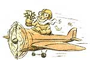

Do what you love, make it your business, have your cake, and eat it too.
Illustrations By Darren Thompson
Shortly before she died, Margaret Mead gave me seven words of 1 advice. Now, years later, I follow them religiously. I had attended a lecture of hers and volunteered to drive her to the airport, knowing I could pick her brain. After having nodded off during a fairly one-sided conversation in which I enthusiastically articulated my career plans, she was suddenly awakened by a speed bump.
Apparently not happy to be awake, she grunted, "Don't be a clone. Get a life." She had a terrific economy with words.
Man, it is not easy getting a life when you are in the "40/40/40" crowd, along with the job, kids, mortgage, car payments, social commitments and taxes. No, 40/40/40 does not represent age/IQ/waist size, it indicates age/income/net worth. It wasn't long ago when the guiding principles were "sex, drugs, and rock and roll;" now, looming on the horizon are "hair loss, taxes and death:'
If you're married and making roughly $40,000 per year you are paying out about $10,000 in income and social security taxes. The total tax burden for the typical family consumes 45 percent of its income, according to the National Taxpayers Union. This means that we work until May 6 to pay the tax bill, then the remaining income earned the rest of the year is ours to keep. Sound enticing? I thought so. Yet there are a few perfectly legal, simple, and understandable ways to take the bite out of next year's bill. Lend me your ear.
Don't get me wrong, some taxes do good. Tax on gasoline pays for road upkeep, property taxes pay for schools, sales tax pays for civic improvements. But your federal taxes go primarily to Department of Defense boondoggles and cost overruns, which gets 20 percent of the budget for $500 toilet seats and $15,000 cross-continental flights for generals and their cats. Social Security gets 23 percent of the budget, which doesn't look too secure, 25 percent goes to welfare, and interest on the 5 trillion-dollar deficit gets 23 percent. I have no problem with rendering unto Caesar, but I've rendered so much lately that I can't even feel my wallet anymore ...or that side of my leg for that matter.
SUCCESS STORIES FROM AVERAGE 40/40/40s
For you to spend $100 in pursuit of getting a life, hobby, or whatever you enjoy, you must first earn $140 in order to take home that $100. If you turn the hobby into a business, however, you could spend that $100 before the government takes its share. And therein lies the single, simplest, most effective tax reduction strategy that all 40/40/40 taxpayers should employ: starting a business that is focused on what you already spend the bulk of your "leisure" funds on. If you do this, many of your leisure/hobby-related expenses become tax-deductible expenses.
The rich don't need to go through all this; they have well-paid advisors that help them pay less in taxes per dollar earned than the middle income people who cannot afford the advisors. 0.1. Simpson proved the Golden Rule that "Those with the most gold get the rules interpreted the way they want."
Ken was addicted to flying airplanes. H scrimped an, saved to buy a plane, then he discovered that hobby planes are known to amateur pilots as "black holes in the sky where all your money goes." So he began to take photographers over scenic areas and disaster sites, to charter trips for small groups, and to rent the plane out.
He had to get a commercial pilot's license to pull it off, though. It worked. He was putting out over $8,000 per year, but now, thanks to his tax deduction and new business income, his net loss is only about $2,000 annually, and he's looking at getting a larger, faster plane next year.
Jeff and Cynthia loved horses. They soon figured out that keeping two horses on their 40-acre spread is just about as much work as keeping 10 horses, so they entered the horse boarding business. They take in $150 per horse, per month, and that more than offsets the expenses of their own two animals.
They spend the excess on continual improvements on the barn and watering system. Anna and I met at conference. She was the first conference junkie I ever met. She went to a different conference or workshop every month. Occasionally she taught a workshop at one of the conferences, so her new business was as a "trainer." Therefore, conferences, travel, materials, were all considered educational expenses for her new career.
The Mason's were dog lovers. They especially loved small dogs, so they turned their pastime into a dog breeding business. Mother of the house, Sophia Mason, was a comedienne as well. They had business cards printed thusly:
"Chihuahua Stud Service"
Now standing at stud is "Studmuffin"
"No job too small."
Bud and Sophia Mason proprietors
Hogsbreath, Arkansas
Sophia says they just about decided to breed bull terriers with the popular Shitzu, so they could market the new breed called bull-shitz. Of course pedigree breeding requires a good deal of paper work with the American Kennel Club). But, the annual sale of a few very expensive pups offsets costs of feed and vet bills.
Step 1.
The first step is to identify where your money goes. Order a cost analysis report from Visa for the previous year; it costs $5 and is worth it. Take all your canceled checks and organize them by type of expense. Now that you are beginning to get a clear picture, get a small calendar notebook and track every single expense, even mileage, and especially cash for a month to determine where it goes.
Step 2.
Select which business to create. Your criteria should be:
You must be willing to do marketing, make sales, have income. It must have an outside chance at making money. It must be believable and defensible in case you get audited. Research what licenses may be required or legal mumbo jumbo stands in your way (i.e., dog breeder's license, commercial pilot's license, fish counselor certificate, dog washer diploma). · Take it seriously. The IRS will, and the Small Business Administration can be a help with its classes and advisors.
Step 3.
Set up a record keeping system. Get a separate checkbook. Get an accountant and have a meeting early in the life of the business for planning and guidelines, then be ready to pay her a couple hundred bucks at the end of the year to help you get your taxes straight. Get a great calendar that you can keep track of who you saw when, how many miles you drove, cash expenses, what transpired, etc.
Step 4.
Draft a brief business plan.
Identify your market (who is likely to pay for your services), determine methods of marketing, (i.e., ads, direct mail, personal calls,lnternet, displaying your products somewhere). Determine methods of production. Set specific objectives: how much of what you plan to do by when. Determine your method of recordkeeping and frequency of producing income and expense reports; this could be monthly or quarterly. I definitely would not wait until the end of the year to do it all. Draft your vision. What does your ideal life/work look like, sound like, feel like, smell like? Now is the time to create a dream of what your life will become. Cover the important topics: work, fun, relationships, growth, learning, body, and soul. Write it down, even if it is just a few sentences, then post it in a private spot where you alone will see it every day. Be careful, this dream will guide what you become, so set your sights high.
Advanced Steps
Register as a business in your state. If you are in the business of buying things and selling them later, you may qualify as a retailer or wholesaler, which has several benefits. For instance (a.) You avoid paying sales tax on items you will resell. (b). You may be able to buy from wholesalers at a discounted price.
Consider creating a corporation. Incorporation costs from $50 to $500 if you do it yourself. It will give you a separate tax identity for your bush ness. It limits you from liability if you are in a risky business. It may be worth visiting the local library to examine the how-to manual for incorporation in your state. Another difficult-to-implement-but interesting-tax-reduction strategy is to claim that you are a church: You can deduct all your house expenses as the parsonage.
Beware
Don't try to deduct your gas bill, or food, or regular expenses of living, unless they are directly related to your business. (You could deduct clothes if some unique costume were required for your work.) The IRS considers the deduction of at-home expenses (a portion of the rent, gas, water, electricity, etc., as part of a business) as a small red flag worth examining, so, be very careful in choosing which expenses to deduct.
Radical tax avoiders propose wild methods such as being in a totally cash business like buying and selling antique furniture, cars, or services like carpentry, auto repair and home cleaning that never come to the light of the tax collector. I would never suggest that you do anything illegal, but...
You can have a money-losing business for only three years before the IRS will really scrutinize your tax return. Plan accordingly. Every three years you could start a new business that is a new approach to your interest.
Meals and entertainment are only 50% deductible, unless you are in the business of meals and entertainment.
Mileage-expense allocation is 30 cents per mile for the year ahead, and that adds up quick for a significant deduction.
If you don't make any income ever at all, the business better not last longer than a year or the IRS will jump on you like a duck on a June bug.
Remember that you may not pay yourself a salary if you are losing money in a small single proprietorship. You can pay others though, as you deem necessary. If you pay someone for work more than $600 per annum, you must file a 1099 with the IRS. Consider forming a co-op to avoid paying salaries and SSI taxes to employees who may be members.
If you purchase some regular expenses by Visa, pay that portion of the bill by your company check. It makes recordkeeping easier.
According to IRS statistics, only about 1% of all returns are audited. If you make more than $100,000, your risk jumps up to 5%. The IRS considers any small business that loses a lot of money a gray area for interpretation, since all businesses lose money in their initial startup years. I definitely think it is worth the risk.
|
|
|
 |